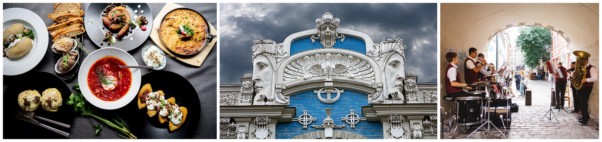

Rīga ir Latvijas galvaspilsēta. Te atrodas Prezidenta pils un citas svarīgas valdības ēkas. Rīga ir lielākā Latvijas pilsēta. Rīgā dzīvo apmēram 700 000 iedzīvotāju. Tūkstošiem cilvēku katru rītu ierodas Rīgā uz darbu vai mācībām. Rīgai cauri tek lielākā Latvijas upe – Daugava. Rīgai ir sena vēsture. Skaista ir vecpilsētas daļa. Tā ir iekļauta UNESCO Pasaules mantojuma sarakstā. Rīga iepriecina ar skaistiem dārziem un parkiem.
Par vēsturi:
Lai gan par Rīgas oficiālo sākumu tiek uzskatīts 1201.gads, kad to dibināja vācu bīskaps Alberts, šī teritorija bija apdzīvota jau iepriekš. 1282.gadā pilsēta pievienojās Hanzas savienībai. Tieši šeit 1510.gadā pirmo reizi pasaulē tika izgreznota Ziemassvētku eglīte. 1629.gadā vācu varu nomanīja zviedru virskundzība un Rīga kļuva par lielāko pilsētu Zviedrijas Karalistē. 1710.gadā Rīga nonāca Krievijas kontrolē, tomēr vācu ietekme joprojām bija jūtama līdz Latvijas neatkarības pasludināšanai. 1873.gadā Rīgā notika pirmie Latvijas dziesmu svētki.
Ekonomiskais uzplaukums un straujā būvniecības attīstība 20.gs. sākumā Rīgu padarīja par ievērojamāko jūgendstila pilsētu pasaulē un par vienu no plaukstošākajām pilsētām Krievijas impērijā. No 1901. līdz 1912.gadam Rīgu vadīja mērs no Lielbritānijas Džordžs Armitsteds. Rīga un Latvija baudīja neatkarības gadus no 1918. līdz 1940.gadam, kad sākās komunistiskās Padomju Savienības un nacistiskās Vācijas okupācija.
Padomju varā Rīga atradās līdz 1991.gadam, kad Latvija atguva brīvību un neatkarību. 2001.gadā Rīga svinēja 800 gadu jubileju un kļuva par vienu no Eiropas kultūras galvaspilsētām. Šobrīd Rīga ir viena no Eiropas dinamiskākajām un straujāk augošajām pilsētām. 1995.gadā tās vēsturiskais centrs Vecrīga tika iekļauts Unesco Pasaules mantojuma sarakstā. Uzzināt vairāk.
Iemesli kapēc apmeklēt Rīgu:
Baltijas kultūras galvaspilsēta.
Arhitektūras pērle.
Vieta aktīvai atpūtai.
Izcili ēdieni un restorāni.
Izklaidei.

Top apskates vietas Rīgā:
Latvijas Universitātes Botāniskais dārzs
"Laimas" šokolādes muzejs"
Cosmos Ilūziju Muzejs Rīgā
Vecrīga
Rīga kļūst arvien populārāka ne tikai Eiropas, bet arī pasaules tūrisma galamērķu vidū, pilsētā ik dienas ierodoties arvien jauniem viesiem. Viens no obligātajiem galvaspilsētas apskates objektiem ir Vecrīga, tomēr arī ārpus tās Rīgu iespējams iepazīt visdažādākajos rakursos.